YNAB (c.f. r/YNAB) (short for You Need a Budget) is a budgeting application that lets you track and manage your finances. Like most apps in this category, it provides a slick interface to enter all your transactions. YNAB is more than just cataloging transactions and tracking account balances, though. The design here revolves around (and goes beyond) what is called envelope budgeting, which basically boils down to this:
Give every dollar a job.
You can dig a little deeper into how YNAB works by looking up their four rules here. I am going to try and create an envelope budgeting system in Notion that is loosely inspired by my use of YNAB.
To be clear, I don’t expect to stop using YNAB, nor do I expect to replicate many of its sophisticated features. Also, there are some nice envelope budgeting systems on Notion already! For instance, you might want to check out the one here by u/sff_fan_17 or the one here by Ben Smith. These are really neat, but the only reason I’m not just duplicating one of them is that what I have in mind looks slightly different from the setups here. In particular, I would like the transactions to be dated and tied to specific accounts, and I would also like the system here to account for all the inflows and outflows in my actual system. Neither of these templates feature a hierarchy of categories either, which is something that we will attempt to do here.
In the first template above, I think the total income is mentioned separately, outside of the database system; and the budget covers a part of the total available income. There are explicit instructions on how to update this month-to-month, so do check this out — perhaps it works for what you might have in mind! The second template explicitly accounts for inflows, and is apparently based on this Google sheet. It does seem that the transactions are missing information about accounts and dates, which could be a little limiting if you wanted to generate a report or a dashboard for a particular period of time. Again, a great starting point, and if it resonates with your kind of setup, it’s definitely worth duplicating and playing with. Both templates are free to access and replicate.
Incidentally, if you don’t use Notion and are hesitant to try YNAB, you could take a look at their guide to building your own budgeting template — this does not require using YNAB at all and can even be made to work pen and paper. Many people have also recreated YNAB’s core features using their own favourite tools, the most popular among which appears to be Google sheets — see, for example: Aspire Budget (c.f. r/aspirebudgeting) — I have not tried this myself, but it appears to be very feature-rich and neat overall.
That said, onto our own YNAB-esque budgeting template in Notion! We’re on our way to something that looks like this:
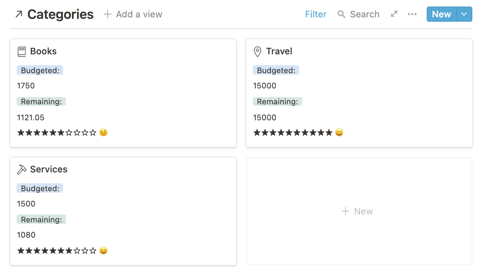
If you want to just skip ahead and play with the template, you can duplicate it by following this link:
There are three key pieces to this setup: the first is the categories (these are the labels on the envelopes, if you like), the second is the actual transactions that take take place, and the third is a list of accounts that you have (could be bank accounts, credit accounts, virtual wallets, and so on). You would want the transactions database to be linked to both categories and the accounts. More on the exact table designs below. I’m going to assume some familiarity with Notion terminology, if this is your first time with Notion then some of this may not make sense right away, but if you could just look up how Notion databases work — especially the relational aspect — then I think you’d have all you need to follow along!
Budgeting Categories
It may be natural for this table to just have one row for each category. You probably want to have a small number of higher-order categories (e.g: monthly supplies, services, maintenance, health, investments, etc.) and smaller, more specific ones under these broad umbrellas (e.g, services would likely have sub-categories along the lines of internet, phone, electricity, water, etc.). You can do this by setting up a relation property to the table itself, and have it sync two-way, like so:
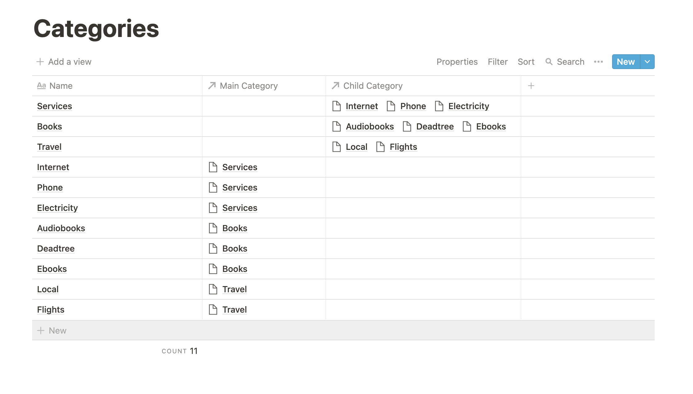
If you want to see just the higher-order categories nicely, you can setup a gallery view with a filter for the main category to be empty, which would look like this (I’ve disabled the preview and added some icons from notion.vip):

Next, we want to specify a budget for each of these categories. We can do this directly for the lower-order categories first. Then, we can have the main category budgets calculated automatically by rolling up the budgets of the corresponding child categories and adding up their budget values. To have a clean view of the budget, you could add a formula column that just adds up the values from the direct budgets and the rollup, like so:
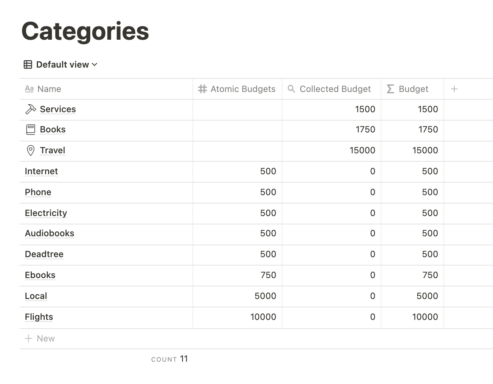
You can add two dummy properties with the text Budgeted: and Remaining: for each row, and set them to show along with the budget in the Gallery view so you get something like this:

There are two natural questions at this point:
- How do we know that we have budgeted what we actually have?
- How do we know what amounts are remaining at any given point of time in the month?
To address both of these questions, we will need to flesh out the transactions database, link it to the categories and come back to this. But before that, let’s do a quick detour with an accounts database just to setup the foundation we need for the transactions database.
Accounts
For this demonstration, I am just going to add two accounts — one savings bank account and one credit card account:
The most natural property we want for the Accounts database would be a balance column. Instead of maintaining this manually, we will just link this with the transactions database and derive the balance by rolling up the relevant transactions.
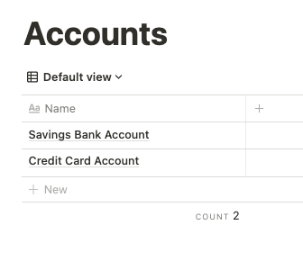
Transactions
You might want to optionally add a memo property that lets you add a quick note or explanation for the transaction. However, given that each database entry is also a page, you could also quite flexibly add all the additional information you want to the page corresponding to any transaction. Meanwhile, you might also want to setup relations to other parts of your Notion setup if you find anything relevant — for instance, if you have a books database, or an inventory database, and so on. That said, we’re going to keep it simple here, and here’s an example transaction:
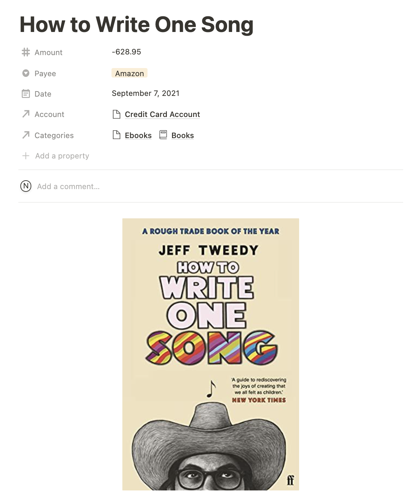
You’ll notice that I’ve linked to both the child and the parent category for this transaction. It would be nice if the parent category was pulled up automatically — and this is possible with a formula, but as far as I know the formula will not actually link the transaction to the main category. So for now, we assign both categories manually. 🤷♀️
One quick thing to do now is to go back to the Accounts database and add a rollup property that takes on the sum of the amounts property from the related transactions table, and once done, the balances show up nicely in the gallery view:
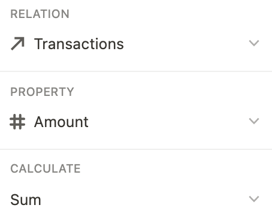
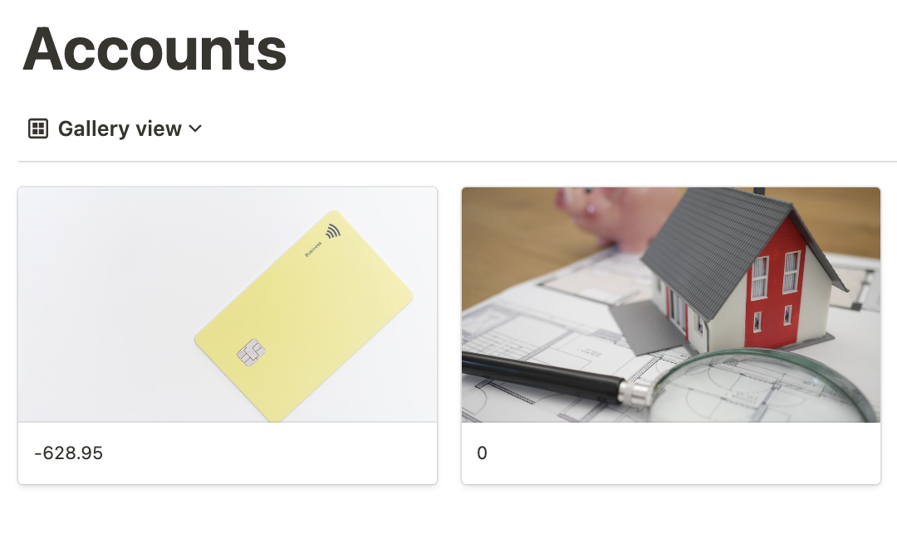
Now we go back to our categories database and rename the relational column to transactions and add a rollup that collects all expenses from the transactions that happened in a particular category, so this is what it looks like:
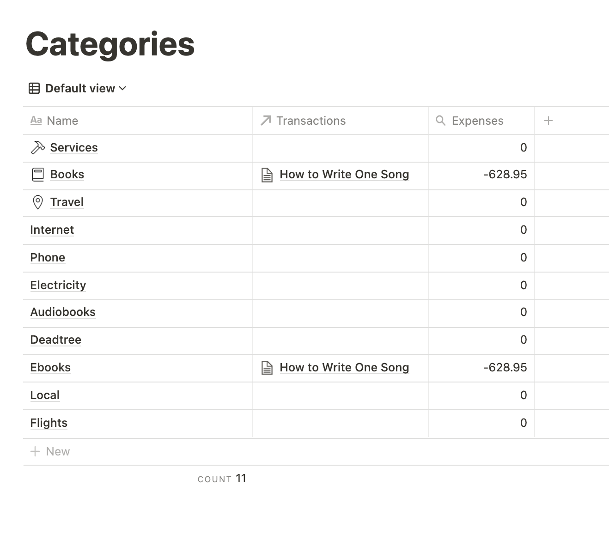
Now add a formula column available that simply adds up the budget and the expense columns so you can find out how much of your budget is still available for use. My formula looks like this:
prop("Final Budget") + prop("Expenses")
Note that it might feel more natural to subtract expenses, but my expenses are already negative amount transactions, so I just need to bundle it all together.
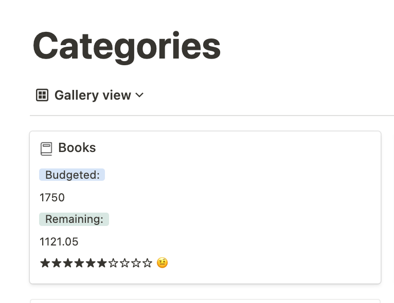
Just for fun, you could also add a status column that visually indicates how much of your budget you have left. The progress-bar style of the status property here is inspired by this guide, and the formula I used requires a couple of auxiliary columns that calculate the percentage and determine if a half-star should be used or not based on the value of the decimal part. It also first checks that the available balance is in fact positive, if not, it’s going to display a suitably scary warning emoji. I won’t bore you with the specifics here, but you can find the formula in the template that I’ve linked to at the end of this post.
So now we are at a point where the remaining amounts are calculated based on the transactions. However, we still have to think about how to link the budgeted amounts to the actual money available. In fact, speaking of money available, I haven’t really touched upon how to handle transactions that are not expenses; i.e, transactions with a positive amount value and that reflect money coming into the system as opposed to leaving it. These are, of course, just regular transactions — but what category do we assign them to? All the ones we have so far really capture spends, not inflows…
So, it turns out that YNAB would take all this money and automatically categorize it as unassigned, or to be budgeted. We can mimic this by creating a special category called to be assigned, and have all income-type transactions categorized as such. Typically this would be transactions corresponding to a salary, client payments, refunds, credit from interest, and so forth.
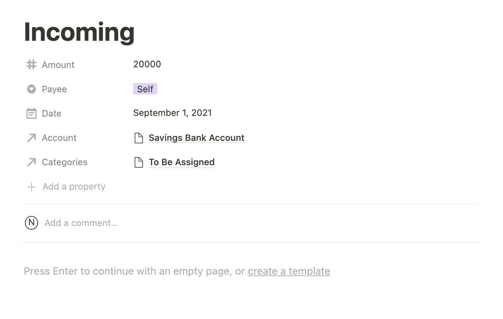
Notice that the so-called expenses1 that are now accumulating in this category is actually the total amount of money that came into the system. Incidentally, if you were to just look at the sum of the balance column in the accounts database, that’s the net amount of money in the system at any given point of time.
1 Remember that the expenses column just rolled up the transaction amounts in a particular category.

You also don’t need to budget separately for credit card payments, because your credit card bill is composed of transactions that were already budgeted for! Even if they were items corresponding to, say, credit card fees, you probably categorized them under Services, for example. So we won’t have a separate budget for credit card bill payments (although I should mention that YNAB does this explicitly and handles it automatically).
Alright, so it seems like we are nearly there, except that our current situation is the following:
- The amount the to be assigned category is a true reflection of incoming funds.
- The amounts that we added to our category budgets were setup manually and generally divorced from the reality in the transactions database.
For example, let’s say I want to budget 750 for ebooks this month. I could do this by adding a dummy transaction that debits an amount of 750 to the to be assigned category and credits it to the ebooks category. What this means is that when we roll up the amounts from all transactions, we directly obtain the amount remaining for us to spend!
So for the very first month, when we have a clean slate, we just have a bunch of such transactions — these won’t have any explicit account associated with them because they aren’t real transactions; and in fact you can always filter your transactions table so that you only see the meaningful ones by setting the condition that the accounts column should be non-empty.
Meanwhile, here is how we do the budgets for our categories all over again, this time via these virtual transactions:
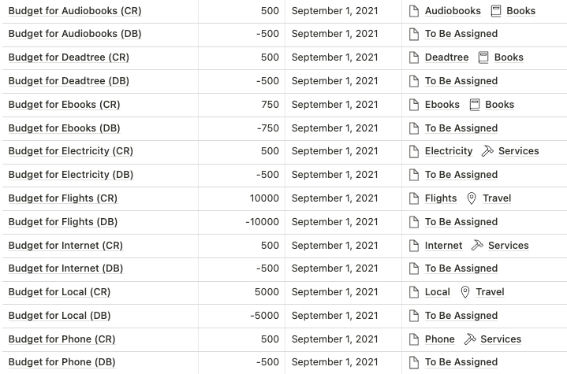
If you go to the to be assigned row in the categories table and look at the rollup value in the expenses column, then you’ll see that it corresponds to either the amount of money that’s still assigned (these are dollars — or in my case, rupees — that don’t have a job yet), or, in case you happen to have overshot the budget, the amount by which you are falling short. In the former situation, the available amount will be a positive number, while in the latter, it’ll be negative.
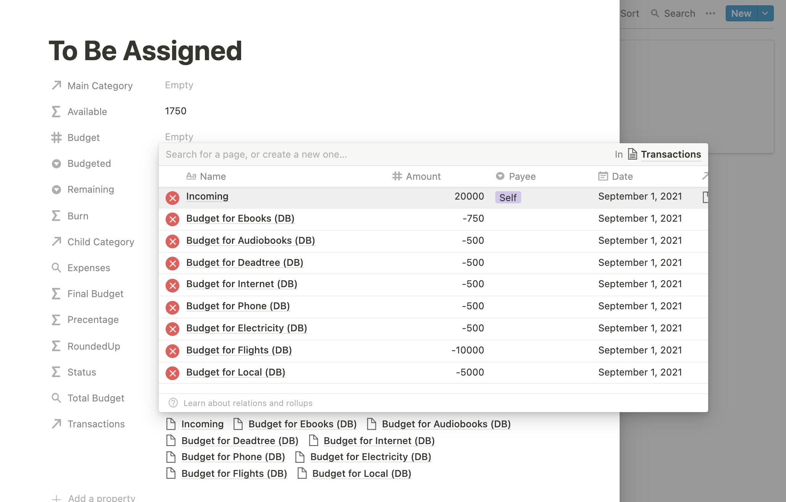
Ideally, we just want this number to be zero, indicating that everything has been assigned appropriately. To achieve this:
- If your budgets have collectively overshot the amount of money available, re-adjust them them — specifically, reduce some of the amounts — so that this is no longer the case. Of course, I am saying this from a theoretical standpoint; if your situation is that you have real expenses that you don’t have real money for, then you would want to plan for this by bringing the differential amount of money into the system via a loan, and then planning the repayment by budgeting for it as well. Dealing with debt is beyond the scope of this discussion, but I think the YNAB blog, book, and videos go into this at length.
- If you have money left over, you could either add it to your budgets, giving yourself some extra wiggle room; but I prefer to budget for fixed amounts generally, so in this situation I’ll just add this amount to something I call a Miscellaneous or Scratchpad category. It’s something you can borrow from if you fall short later, it has no particular semantics. Some people like to sweep off any excess money into deposit accounts, and if you do this, then you might want to create those accounts in the system and enter those transactions to get rid of this positive balance.
At the end of this, you are in a situation where all money is nice and assigned. Since we started off by specifying budgets manually, we should go back and fix some formulas in our database of categories. In particular, here’s what I did to simplify things:
- Remove the
Availablecolumn (previously this was the difference of the manually set budget and the rolled up expenses). - Rename
ExpensestoAvailable, since the rollup now just reflects what’s truly available.
I’m going to leave the manually added budgets in — although we won’t use them to calculate what’s truly available any more, they will help us plan our budgets going forward.
Everything so far should make sense for an initial setup, but what do we do when we have new incoming transactions that need to be assigned to categories? I generally like to do the budgeting exercise once at the start of every month, so any intermediate positive transactions into the system will either remain in the To be assigned category, or if you are OCD about wanting that that category to be set to zero always, you can always push this number out into your scratchpad.
At the start of the month (this could be another day and a different frequency; but I do recommend being consistent for simplicity), we need to refuel the categories with the funds available. There are two kinds of things that could happen here, broadly speaking:
- For categories that represent a plan to save up to something, like a vacation, or a category where you feel like you want to have a certain amount of money set aside every month irrespective of how much you spent in the last month, you just want to push
budgetamount of money into that category via the virtual transactions we discussed earlier. - For other categories, which I like to think of as those having rolling budgets, you want to only assign the difference between what was budgeted and what was spent… and hopefully this is a non-negative quantity!
You could setup a checkbox to indicate which categories have rolling budgets and which ones do not, and then this formula:
prop("IsRolling?") ? (prop("Budget") - prop("Available")) : prop("Budget")
will tell you how much you should budget for next month.

In this example, Ebooks are not a rolling category, so even though I need only 628.95 to meet the original budget, I’ll still set aside the full 750, and the amount that will be available will be 871.05. On the other hand, Phone is a rolling category, and presumably my phone-related expenses in the current month added up to 420, so the recommendation is to budget 420 next time so you’ll still have 500 available total.
The Process After Setting Up
There are two main times that you’ll interact with this budget: whenever a transaction is made, and once every X days to reset the budgets for the individual categories.
Adding transactions is reasonably easy, although admittedly it’s probably not as smooth as a specialized app that might have a Siri command to do this for you or a widget that let’s you quick-add things. However, it’s not too bad, especially if you enter it right away. You could also potentially automate this via API integrations, or enter your transactions in your regular app and export them as a CSV and import them into the Notion system once every so often.

The budgeting bit is going to be a little more work, especially if you work with a gazillion categories. The formulas will guide to you what needs to be done, but those virtual transactions still need to be added manually. On YNAB, you can do what I described above (adding the deficit to rollup categories and the originally intended budgets to the others) in one click — and there are other options too, for example, you may have moved to a new location and you’re still getting the hang of what you’ll need to set aside for groceries, so YNAB will offer to budget what you spent last month, or your average expenses from the last six months, and so on. Here, since you are assigning things manually, you can definitely tweak as you go; the next month column is just a suggestion.
You can probably prepare a CSV file with the default budget amounts and just merge this in at the start of every month if your expenses are super predictable, and just adjust the entries that need adjusting. This will save you some time, but remember that the categories still need to be linked to manually. It’s not too bad for something that happens once a month and that will hopefully bring you some sense of control and awareness 😇
Perhaps also try and not have a gazillion categories and sub-categories, at least to begin with — it helps to keep things simple, especially when starting out.
Common Pitfalls
Here are a couple of mistakes I made frequently, even while just setting up this template!
- Forgetting that transaction amounts corresponding to expenses should be recorded as negative numbers! If this happens very very frequently to you, you could also set this up a little differently — have a checkbox to indicate if a transaction is an expense or an inflow, and always enter a positive number reflecting the amount, and let a formula do the work of adding the sign!
- Forgetting to add the parent category — this can mess up the views of what’s available in the high-level categories and cause the numbers to not tally. So if you need to debug your numbers, check for whether you have added both categories to your transactions or not!
Dashboards
Most of the action here is happening in the Transactions database. You could create linked copies of this database anywhere you like and filter things out to see what you want. For instance, if you want to keep tabs on the transactions in specific accounts, you could have this on your account pages:

You could filter out transactions for a particular month, a particular category (either a top-level category or an atomic one), and so on. I think there’s plenty you can do here, but I am not sure how much of this can be automated. For instance, you might want to generate — or have over email — a monthly report of your expenses across various categories and how did relative to your estimated budgets. This should be possible by leveraging the API and tools like Integromat/Zapier/Automate.io - but I haven’t really explored the possibilities here.
Missing Features
It would be nice to have a gallery view of the months of the year showing spends and budgets in each (high-level?) category. For this though I’d need the rows to correspond to months, columns corresponding to categories, which pull up transactions that happened in a particular month from said category.
Even if I manually linked the transactions database to this calendar one, and made sure each transaction was linked to the correct row, I don’t see how I can split up those transactions across categories, since it’s not possible to add a filter to relational columns or rollups as far as I know. It’s a similar bottleneck going through the Categories database as well. This information is of course implicit in the system, I just can’t think of a neat way of visualizing it.
This is possible to do for the current month though:
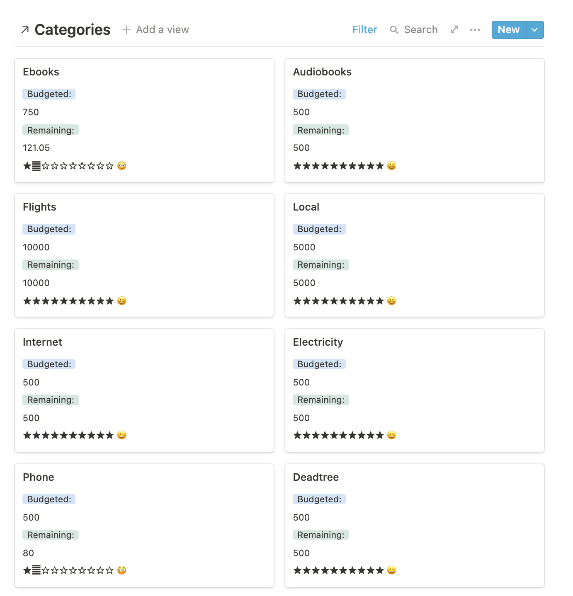
YNAB also has more sophisticated category types — apart from budgets that roll or accumulate, you could have categories that aim to have a certain amount of funds assigned by a certain date and so on. For those who are freelancers with incomes spread over the days of the month, I think YNAB has a lot of little features that allow for a more flexible way of budgeting, which I’m not super familiar with because I’m not in this situation. This is just to say that this setup here may be both limiting and feeing because of how much of the setup is manually done. At least that’s my optimistic view right now 😀
Finally, YNAB also has an option to reconcile accounts, which is when you declare that the numbers in YNAB match the book balance according to your bank or credit card agency. This is a neat little thing that I like to check off every so often. Here, I suppose you could just glance through the balances on the Accounts database (remember the gallery view from earlier?), but it won’t have the same song-and-dance-y feeling — but maybe this could be a recurring task that you can check off, and hopefully that will feel good 😅
So that’s about it! I’d love to hear any feedback on this, and suggestions for improving the setup would be very welcome too. You can duplicate the template from here.